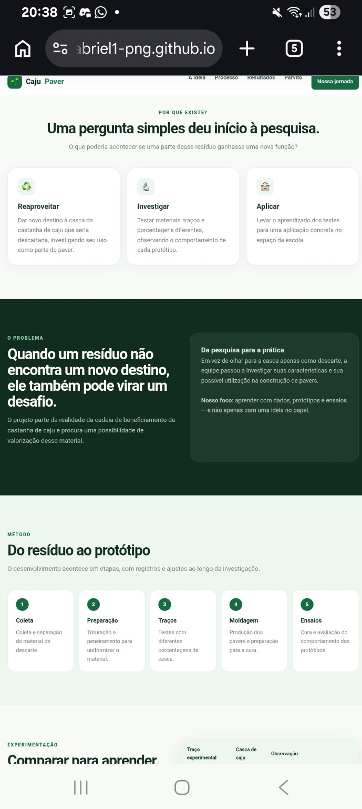
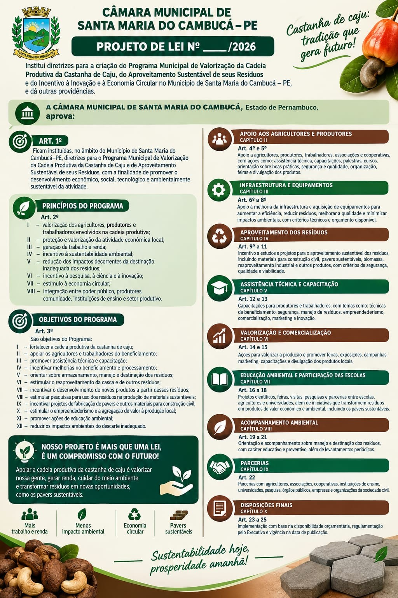
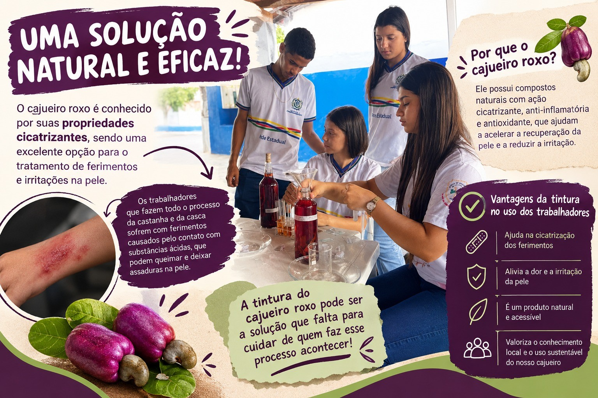

♻️
Reaproveitar
Dar novo destino à casca da castanha de caju que seria descartada, investigando seu uso como parte do paver.
O Pavers Sustentáveis investiga o aproveitamento da casca da castanha de caju na produção de pavers, unindo pesquisa, experimentação e uma proposta pensada para a nossa escola e para o futuro da nossa região.

Protótipos • projeto em desenvolvimentoO que poderia acontecer se uma parte desse resíduo ganhasse uma nova função — na escola e, no futuro, em outros espaços da nossa região?
Dar novo destino à casca da castanha de caju que seria descartada, investigando seu uso como parte do paver.
Testar materiais, traços e porcentagens diferentes, observando o comportamento de cada protótipo.
Levar o aprendizado dos testes para aplicações futuras em calçadas, praças e outros espaços.
Relacionar ciência e sustentabilidade a uma cultura e a uma cadeia produtiva importante para a região.
A casca da castanha contém o líquido da casca da castanha (LCC/CNSL), uma mistura rica em compostos fenólicos, como ácido anacárdico, cardanol e cardol. A composição varia conforme a origem e o processamento.
O LCC natural possui características irritantes e cáusticas, por isso seus componentes exigem cuidado no manuseio e processamento. Isso reforça a importância de estudar formas responsáveis de valorização desse resíduo.
Nosso desafio: investigar como um material ligado ao descarte da cadeia da castanha pode ganhar uma nova função, sem deixar de considerar segurança, testes e responsabilidade ambiental.
O desenvolvimento acontece em etapas, com registros e ajustes ao longo da investigação.
Coleta e separação do material de descarte.
Peneiramento e organização para uniformizar o material; a trituração pode ser usada quando necessária.
Testes com diferentes porcentagens de casca.
Produção dos pavers e preparação para a cura.
Cura e avaliação do comportamento dos protótipos.
Os diferentes traços ajudam a equipe a observar como a porcentagem de casca interfere no comportamento da mistura.
| Traço experimental | Casca de caju | Observação |
|---|---|---|
| Traço 1 | 5% | Boa coesão no protótipo testado |
| Traço 2 | 10% | Mistura trabalhável, com maior atenção à porosidade |
| Traço escolhido | 15% Versão atual | Percentual definido para a versão atual do projeto, mantendo a resistência necessária conforme os testes realizados. |
Os protótipos fazem parte da etapa experimental e ajudam a equipe a comparar misturas, observar o comportamento do material e decidir os próximos passos.
Os primeiros protótipos já passaram por etapas de produção e ensaios. Os resultados registrados até aqui servem como base para os próximos aprimoramentos.
O projeto reúne uma proposta ambiental, econômica, social e técnica. Alguns benefícios ainda são potenciais e dependem de novos testes e da aplicação em escala real.
Agora, o projeto entra em uma nova etapa: transformar o que aprendemos nos testes em uma aplicação real e ampliar essa experiência para além da escola.

A equipe elaborou uma proposta de Projeto de Lei de Valorização da Cadeia Produtiva da Castanha de Caju, pensando em como a ciência desenvolvida na escola pode dialogar com as necessidades da nossa região.
O Pavers Sustentáveis se relaciona principalmente com quatro Objetivos de Desenvolvimento Sustentável da Agenda 2030.
Relaciona-se à pesquisa, à inovação e ao desenvolvimento de uma alternativa de material para a construção.
Relaciona-se à possibilidade de aplicação dos pavers em calçadas, praças e outros espaços da comunidade.
É uma relação central: transformar um resíduo da cadeia da castanha em matéria-prima para uma nova possibilidade de uso.
Relaciona-se à busca por práticas e soluções que considerem os impactos ambientais e a sustentabilidade.
As normas ajudam a orientar procedimentos, materiais e ensaios. A equipe utiliza essas referências como parte da organização técnica do projeto.
Referência diretamente relacionada às peças de concreto para pavimentação e aos requisitos e métodos de avaliação aplicáveis.
Relacionada aos procedimentos de moldagem e cura de corpos de prova de concreto, servindo de referência para essa etapa experimental.
Relacionada ao ensaio de resistência à compressão de corpos de prova de concreto, importante para a avaliação mecânica.
Estabelece requisitos para agregados destinados ao concreto e ajuda na análise dos materiais utilizados nas misturas.
Uma proposta experimental que aproxima conhecimento tradicional, pesquisa escolar e valorização da biodiversidade regional.

A equipe também investigou uma preparação experimental relacionada ao cajueiro roxo (Anacardium occidentale), a partir de conhecimentos tradicionais e de estudos científicos sobre compostos presentes na casca.
Pesquisas experimentais investigam atividades biológicas de extratos do cajueiro, incluindo resultados relacionados à resposta inflamatória e a modelos de cicatrização. Porém, esses estudos não são suficientes para comprovar que a preparação desenvolvida pelos alunos tenha eficácia terapêutica em pessoas.
Parvito é a identidade do nosso projeto. Ele acompanha nossa jornada e ajuda a apresentar a ciência, os testes e as ideias do Pavers Sustentáveis de um jeito simples e próximo.
Ele representa nossa criatividade enquanto a equipe coloca a mão na massa, pesquisa, testa e aprende com cada etapa.
Algumas imagens já foram adicionadas. Os demais registros poderão ser incluídos conforme a equipe reunir novos materiais.
Descubra outros detalhes da nossa pesquisa, dos nossos testes e da nossa jornada.
Parvito: ajude nossa ideia a chegar mais longe! Compartilhe o projeto e faça parte dessa transformação pela valorização da castanha e por um ambiente mais saudável.